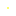
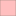

<!doctype html>
<html lang="en">
    <head>
        <meta charset="utf-8">
        <meta http-equiv="X-UA-Compatible" content="IE=edge">
        <meta name="viewport" content="initial-scale=1,user-scalable=no,maximum-scale=1,width=device-width">
        <meta name="mobile-web-app-capable" content="yes">
        <meta name="apple-mobile-web-app-capable" content="yes">
        <link rel="stylesheet" href="css/leaflet.css">
        <link rel="stylesheet" href="css/qgis2web.css"><link rel="stylesheet" href="css/fontawesome-all.min.css">
        <link rel="stylesheet" href="css/MarkerCluster.css">
        <link rel="stylesheet" href="css/MarkerCluster.Default.css">
        <style>
        html, body, #map {
            width: 100%;
            height: 100%;
            padding: 0;
            margin: 0;
        }
        </style>
        <title></title>
    </head>
    <body>
        <div id="map">
        </div>
        <script src="js/qgis2web_expressions.js"></script>
        <script src="js/leaflet.js"></script>
        <script src="js/leaflet.rotatedMarker.js"></script>
        <script src="js/leaflet.pattern.js"></script>
        <script src="js/leaflet-hash.js"></script>
        <script src="js/Autolinker.min.js"></script>
        <script src="js/rbush.min.js"></script>
        <script src="js/labelgun.min.js"></script>
        <script src="js/labels.js"></script>
        <script src="js/leaflet.markercluster.js"></script>
        <script src="data/population_2.js"></script>
        <script src="data/th_village_3.js"></script>
        <script>
        var map = L.map('map', {
            zoomControl:true, maxZoom:28, minZoom:1
        }).fitBounds([[-83.90953958077456,-154.65833536626172],[78.82009782606023,160.40854827345112]]);
        var hash = new L.Hash(map);
        map.attributionControl.setPrefix('<a href="https://github.com/tomchadwin/qgis2web" target="_blank">qgis2web</a> &middot; <a href="https://leafletjs.com" title="A JS library for interactive maps">Leaflet</a> &middot; <a href="https://qgis.org">QGIS</a>');
        var autolinker = new Autolinker({truncate: {length: 30, location: 'smart'}});
        var bounds_group = new L.featureGroup([]);
        function setBounds() {
        }
        map.createPane('pane_GoogleSatellite_0');
        map.getPane('pane_GoogleSatellite_0').style.zIndex = 400;
        var layer_GoogleSatellite_0 = L.tileLayer('https://mt1.google.com/vt/lyrs=s&x={x}&y={y}&z={z}', {
            pane: 'pane_GoogleSatellite_0',
            opacity: 1.0,
            attribution: '',
            minZoom: 1,
            maxZoom: 28,
            minNativeZoom: 0,
            maxNativeZoom: 19
        });
        layer_GoogleSatellite_0;
        map.addLayer(layer_GoogleSatellite_0);
        map.createPane('pane_OSMStandard_1');
        map.getPane('pane_OSMStandard_1').style.zIndex = 401;
        var layer_OSMStandard_1 = L.tileLayer('http://tile.openstreetmap.org/{z}/{x}/{y}.png', {
            pane: 'pane_OSMStandard_1',
            opacity: 1.0,
            attribution: '<a href="https://www.openstreetmap.org/copyright">© OpenStreetMap contributors, CC-BY-SA</a>',
            minZoom: 1,
            maxZoom: 28,
            minNativeZoom: 0,
            maxNativeZoom: 19
        });
        layer_OSMStandard_1;
        map.addLayer(layer_OSMStandard_1);
        function pop_population_2(feature, layer) {
            var popupContent = '<table>\
                    <tr>\
                        <td colspan="2">' + (feature.properties['fid'] !== null ? autolinker.link(feature.properties['fid'].toLocaleString()) : '') + '</td>\
                    </tr>\
                    <tr>\
                        <td colspan="2">' + (feature.properties['iso_a2'] !== null ? autolinker.link(feature.properties['iso_a2'].toLocaleString()) : '') + '</td>\
                    </tr>\
                    <tr>\
                        <td colspan="2">' + (feature.properties['NAME'] !== null ? autolinker.link(feature.properties['NAME'].toLocaleString()) : '') + '</td>\
                    </tr>\
                    <tr>\
                        <td colspan="2">' + (feature.properties['FIPS_10_'] !== null ? autolinker.link(feature.properties['FIPS_10_'].toLocaleString()) : '') + '</td>\
                    </tr>\
                    <tr>\
                        <td colspan="2">' + (feature.properties['ISO_A3'] !== null ? autolinker.link(feature.properties['ISO_A3'].toLocaleString()) : '') + '</td>\
                    </tr>\
                    <tr>\
                        <td colspan="2">' + (feature.properties['WB_A2'] !== null ? autolinker.link(feature.properties['WB_A2'].toLocaleString()) : '') + '</td>\
                    </tr>\
                    <tr>\
                        <td colspan="2">' + (feature.properties['WB_A3'] !== null ? autolinker.link(feature.properties['WB_A3'].toLocaleString()) : '') + '</td>\
                    </tr>\
                </table>';
            layer.bindPopup(popupContent, {maxHeight: 400});
        }

        function style_population_2_0(feature) {
            if (feature.properties['fid'] >= 1.000000 && feature.properties['fid'] <= 165.400000 ) {
                return {
                pane: 'pane_population_2',
                opacity: 1,
                color: 'rgba(119,116,104,0.6039215686274509)',
                dashArray: '',
                lineCap: 'butt',
                lineJoin: 'miter',
                weight: 1.0, 
                fill: true,
                fillOpacity: 1,
                fillColor: 'rgba(255,255,255,1.0)',
                interactive: true,
            }
            }
            if (feature.properties['fid'] >= 165.400000 && feature.properties['fid'] <= 326.600000 ) {
                return {
                pane: 'pane_population_2',
                opacity: 1,
                color: 'rgba(119,116,104,0.6039215686274509)',
                dashArray: '',
                lineCap: 'butt',
                lineJoin: 'miter',
                weight: 1.0, 
                fill: true,
                fillOpacity: 1,
                fillColor: 'rgba(255,191,191,1.0)',
                interactive: true,
            }
            }
            if (feature.properties['fid'] >= 326.600000 && feature.properties['fid'] <= 465.200000 ) {
                return {
                pane: 'pane_population_2',
                opacity: 1,
                color: 'rgba(119,116,104,0.6039215686274509)',
                dashArray: '',
                lineCap: 'butt',
                lineJoin: 'miter',
                weight: 1.0, 
                fill: true,
                fillOpacity: 1,
                fillColor: 'rgba(255,128,128,1.0)',
                interactive: true,
            }
            }
            if (feature.properties['fid'] >= 465.200000 && feature.properties['fid'] <= 2553.200000 ) {
                return {
                pane: 'pane_population_2',
                opacity: 1,
                color: 'rgba(119,116,104,0.6039215686274509)',
                dashArray: '',
                lineCap: 'butt',
                lineJoin: 'miter',
                weight: 1.0, 
                fill: true,
                fillOpacity: 1,
                fillColor: 'rgba(255,64,64,1.0)',
                interactive: true,
            }
            }
            if (feature.properties['fid'] >= 2553.200000 && feature.properties['fid'] <= 6094.000000 ) {
                return {
                pane: 'pane_population_2',
                opacity: 1,
                color: 'rgba(119,116,104,0.6039215686274509)',
                dashArray: '',
                lineCap: 'butt',
                lineJoin: 'miter',
                weight: 1.0, 
                fill: true,
                fillOpacity: 1,
                fillColor: 'rgba(255,0,0,1.0)',
                interactive: true,
            }
            }
        }
        map.createPane('pane_population_2');
        map.getPane('pane_population_2').style.zIndex = 402;
        map.getPane('pane_population_2').style['mix-blend-mode'] = 'normal';
        var layer_population_2 = new L.geoJson(json_population_2, {
            attribution: '',
            interactive: true,
            dataVar: 'json_population_2',
            layerName: 'layer_population_2',
            pane: 'pane_population_2',
            onEachFeature: pop_population_2,
            style: style_population_2_0,
        });
        bounds_group.addLayer(layer_population_2);
        map.addLayer(layer_population_2);
        function pop_th_village_3(feature, layer) {
            var popupContent = '<table>\
                    <tr>\
                        <td colspan="2">' + (feature.properties['VILL_'] !== null ? autolinker.link(feature.properties['VILL_'].toLocaleString()) : '') + '</td>\
                    </tr>\
                    <tr>\
                        <td colspan="2">' + (feature.properties['VILL_ID'] !== null ? autolinker.link(feature.properties['VILL_ID'].toLocaleString()) : '') + '</td>\
                    </tr>\
                    <tr>\
                        <td colspan="2">' + (feature.properties['NAME'] !== null ? autolinker.link(feature.properties['NAME'].toLocaleString()) : '') + '</td>\
                    </tr>\
                    <tr>\
                        <td colspan="2">' + (feature.properties['AMP_ID'] !== null ? autolinker.link(feature.properties['AMP_ID'].toLocaleString()) : '') + '</td>\
                    </tr>\
                    <tr>\
                        <td colspan="2">' + (feature.properties['TAM_NAME'] !== null ? autolinker.link(feature.properties['TAM_NAME'].toLocaleString()) : '') + '</td>\
                    </tr>\
                    <tr>\
                        <td colspan="2">' + (feature.properties['AMP_NAME'] !== null ? autolinker.link(feature.properties['AMP_NAME'].toLocaleString()) : '') + '</td>\
                    </tr>\
                    <tr>\
                        <td colspan="2">' + (feature.properties['PRV_NAME'] !== null ? autolinker.link(feature.properties['PRV_NAME'].toLocaleString()) : '') + '</td>\
                    </tr>\
                </table>';
            layer.bindPopup(popupContent, {maxHeight: 400});
        }

        function style_th_village_3_0() {
            return {
                pane: 'pane_th_village_3',
                radius: 1.2000000000000006,
                opacity: 1,
                color: 'rgba(35,35,35,0.0)',
                dashArray: '',
                lineCap: 'butt',
                lineJoin: 'miter',
                weight: 1,
                fill: true,
                fillOpacity: 1,
                fillColor: 'rgba(250,250,0,1.0)',
                interactive: true,
            }
        }
        map.createPane('pane_th_village_3');
        map.getPane('pane_th_village_3').style.zIndex = 403;
        map.getPane('pane_th_village_3').style['mix-blend-mode'] = 'normal';
        var layer_th_village_3 = new L.geoJson(json_th_village_3, {
            attribution: '',
            interactive: true,
            dataVar: 'json_th_village_3',
            layerName: 'layer_th_village_3',
            pane: 'pane_th_village_3',
            onEachFeature: pop_th_village_3,
            pointToLayer: function (feature, latlng) {
                var context = {
                    feature: feature,
                    variables: {}
                };
                return L.circleMarker(latlng, style_th_village_3_0(feature));
            },
        });
        var cluster_th_village_3 = new L.MarkerClusterGroup({showCoverageOnHover: false,
            spiderfyDistanceMultiplier: 2});
        cluster_th_village_3.addLayer(layer_th_village_3);

        bounds_group.addLayer(layer_th_village_3);
        cluster_th_village_3.addTo(map);
        var baseMaps = {};
        L.control.layers(baseMaps,{' th_village': cluster_th_village_3,'population<br /><table><tr><td style="text-align: center;"></td><td>1 - 165</td></tr><tr><td style="text-align: center;"></td><td>165 - 327</td></tr><tr><td style="text-align: center;"></td><td>327 - 465</td></tr><tr><td style="text-align: center;"></td><td>465 - 2553</td></tr><tr><td style="text-align: center;"></td><td>2553 - 6094</td></tr></table>': layer_population_2,"OSM Standard": layer_OSMStandard_1,"Google Satellite": layer_GoogleSatellite_0,},{collapsed:false}).addTo(map);
        setBounds();
        </script>
    </body>
</html>
